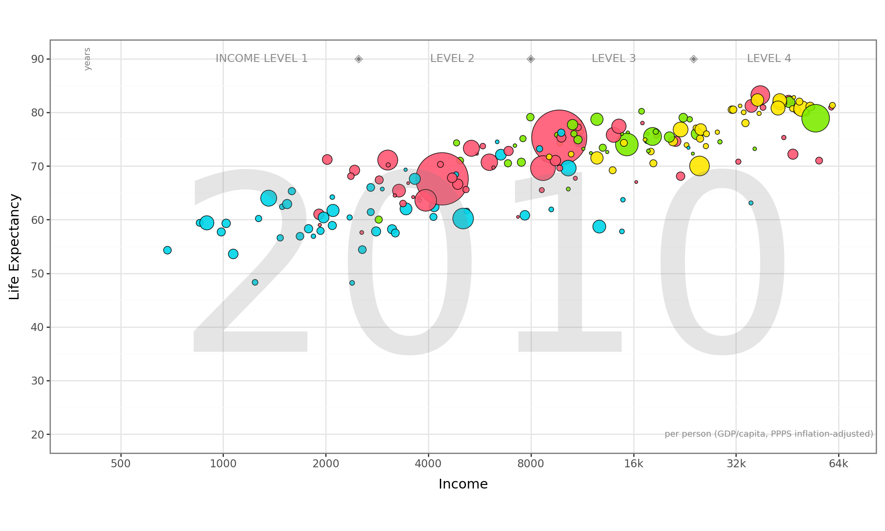

import pandas as pd
from plotnine import ggplot, aes, geom_point, scale_size, scale_color_manual, labs, theme_bw, scale_x_continuous, scale_y_continuous, annotate, theme, scale_fill_manual, scale_size
gray_diamond = '\u25C8'
df = pd.read_csv('q1data.csv')
df_clean = df.dropna()
region_colors = {
"asia": "#FF5872",
"europe": "#FFE700",
"africa": "#00D5E9",
"americas": "#7FEB00",
}
region_labels = {
"asia": "Asia",
"europe": "Europe",
"americas": "Americas",
"africa": "Africa"
}
plot = (
ggplot(df_clean, aes(x="income", y="life_exp", fill="four_regions", size="population")) +
geom_point(alpha=.9, stroke=.3, color = "black") +
scale_x_continuous(
trans='log2',
breaks=[500, 1000, 2000, 4000, 8000, 16000, 32000, 64000],
limits=(400, 64000),
labels=['500', '1000', '2000', '4000', '8000', '16k', '32k', '64k'] #Used Chatgpt to find out how to set the x-axis increments
) +
scale_y_continuous(
breaks=range(20, 91, 10),
limits=(20, 90) #Used Chatgpt to find out how to set the y-axis increments
) +
scale_fill_manual(
values=region_colors,
name="World Regions",
labels=region_labels
) +
scale_size(range=(1, 25), name="Population" #USed CHATGPT to help make the size of the bubbles correspond to the population size
) +
labs(
x="Income",
y="Life Expectancy",
size="Bubble Size = Population",
color="World Regions"
) +
theme_bw()
+ annotate('text', x=6000, y=48, label='2010', size=200, alpha=0.2, color='gray')
+ annotate('text', x=40000, y=20, label= 'per person (GDP/capita, PPPS inflation-adjusted)', size=7, alpha=.9, color='gray')
+ annotate('text', x=400, y=90, label='years', size=7, color='gray', angle=90)
+ annotate('text', x=1300, y=90, label='INCOME LEVEL 1', size=9, alpha = .9, color='gray')
+ annotate('text', x=4700, y=90, label='LEVEL 2', size=9, alpha = .9, color='gray')
+ annotate('text', x=14000, y=90, label='LEVEL 3', size=9, alpha = .9, color='gray')
+ annotate('text', x=40000, y=90, label='LEVEL 4', size=9, alpha = .9, color='gray')
+ annotate('text', x=2500, y=90, label=gray_diamond, size=9, color='gray')
+ annotate('text', x=8000, y=90, label=gray_diamond, size=9, color='gray')
+ annotate('text', x=24000, y=90, label=gray_diamond, size=9, color='gray')
+ theme(aspect_ratio=0.5)
+ theme(figure_size=(10,6))
+ theme(legend_position='none')
)
plot
/usr/local/lib/python3.10/dist-packages/plotnine/layer.py:364: PlotnineWarning: geom_point : Removed 7 rows containing missing values.